基础图形设置 截图中，世界相机使用原生分辨率的 TAA，地形和云层为 High，环境光遮蔽、间接光照、反射和体积雾为 Medium。游戏里将指针移到某一项，就能看到它主要消耗 GPU 时间、CPU 时间还是显存。下文保留了截图里的英文选项名和当前值，便于对照。
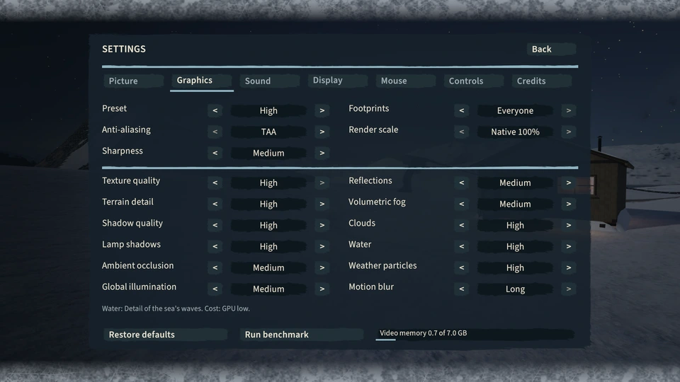
A
A · 图形设置面板，High、TAA、原生 100% A 是游戏的图形设置页。B 是另一场采用同一 High 预设和原生 TAA 的基准测试。0.6.157-test 在 RTX 4070 Laptop GPU、2560 × 1440 下平均为 75.95 fps，95% 的帧耗时在 14.97 ms 以内。
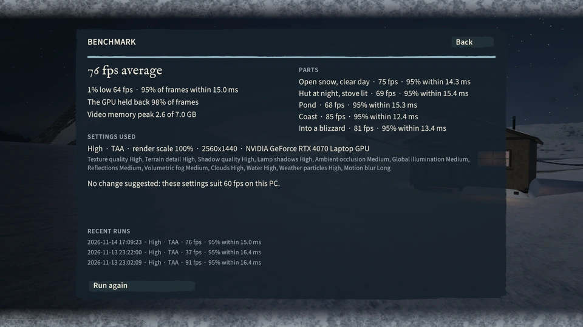
B
B · High 预设在 2560 × 1440 下的实测结果 A 是游戏的图形设置页。B 是另一场采用同一 High 预设和原生 TAA 的基准测试。0.6.157-test 在 RTX 4070 Laptop GPU、2560 × 1440 下平均为 75.95 fps，95% 的帧耗时在 14.97 ms 以内。
A
A · 只显示玩家的脚印 两张图固定机位，将时间停在晴天 14:07。A 只记录玩家的脚印。B 切到 Everyone，右侧可以看到另一名探险者留下的第二行脚印。
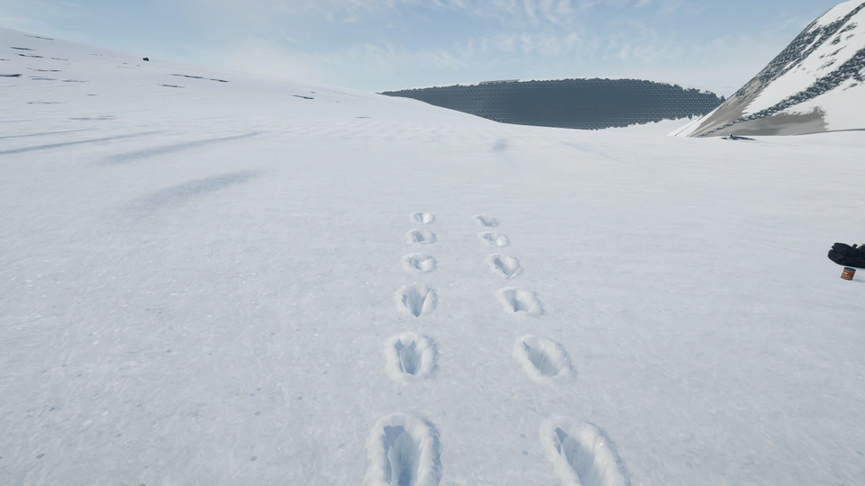
B
B · 同时显示玩家和探险者的脚印 两张图固定机位，将时间停在晴天 14:07。A 只记录玩家的脚印。B 切到 Everyone，右侧可以看到另一名探险者留下的第二行脚印。
A
A · 校准前的 Extreme，炉边雪面偏亮 午夜，炉火点燃，两张图都取自受损木屋里的同一机位。将 Extreme 的环境光遮蔽、间接光照和体积雾统一调到与 High 相同的 Medium 后，炉旁雪面和右侧木板都暗了下来。记录的全图平均亮度从 0.319 降到 0.194，接近 High 的 0.189。
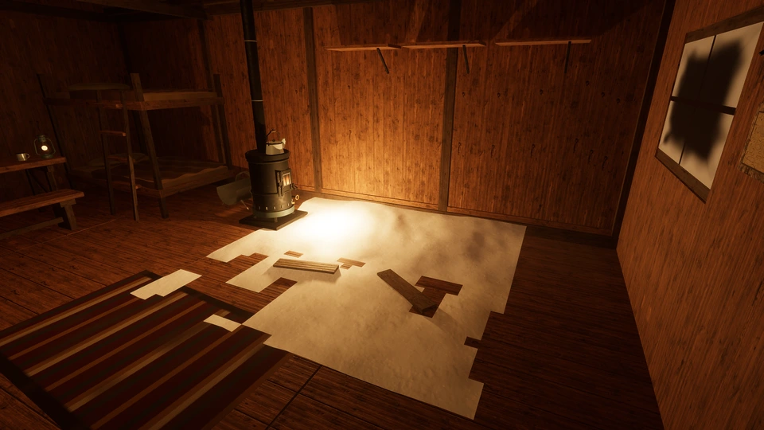
B
B · 校准后的 Extreme，炉边雪面与木板 午夜，炉火点燃，两张图都取自受损木屋里的同一机位。将 Extreme 的环境光遮蔽、间接光照和体积雾统一调到与 High 相同的 Medium 后，炉旁雪面和右侧木板都暗了下来。记录的全图平均亮度从 0.319 降到 0.194，接近 High 的 0.189。 预设与图像重建 画质预设 Preset High 从 Low 到 Extreme，五档预设分别给十二项画质参数赋值。单独改动其中一项，预设就显示为 Custom。反走样、渲染比例、锐化和脚印归属可独立选择。为让木屋在不同预设下保持接近的亮度，High、Ultra 和 Extreme 采用相同的遮蔽、间接光照与雾采样档位。 对照午夜木屋
反走样 Anti-aliasing TAA 原生 TAA 用运动矢量把历史帧的采样对齐到当前帧，减少转动镜头时细旗绳和山脊的闪烁。SMAA 在当前帧检测、混合边缘。TAA Upscale、DLSS 和 FSR 2 利用多帧信息重建画面，FSR 1 则在相机 TAA 之后做空间上采样。HDRP 检测到支持时才提供 DLSS 和 FSR 2。
渲染比例 Render scale Native 100% 原生 TAA 和 SMAA 按输出分辨率绘制。启用上采样后，世界相机的内部宽、高可分别设为输出的 67%、58% 或 50%。例如 67% 档只需绘制约 45% 的像素，再重建到屏幕尺寸。Direct3D 11 下通过 HDRP 软件动态分辨率接口应用选定的固定比例。
锐化 Sharpness Medium 重建后的雪面细纹可能变软。原生 TAA 的关、低、中、高四档锐化强度分别为 0、0.25、0.5、0.8。FSR 1 用对比度自适应锐化 RCAS，DLSS 和 FSR 2 各自接收对应的锐化参数。选择 SMAA 时这一项置灰。 雪面、纹理与阴影 脚印 Footprints Everyone 关、仅玩家、所有人三档控制哪些靴底接触会写入雪面。计算着色器把镜头附近的落脚点写入两张 1024 × 1024 的纹理，分别存储压痕和隆起的边缘，每个纹素覆盖 4 厘米。随后降雪逐渐填平脚印。 对照两行脚印
纹理质量 Texture quality High High 保留完整的 mipmap 层级，强制启用各向异性过滤，斜看雪地或木地板时仍能分辨细纹。Low 跳过最高分辨率的一级 mip，使用各纹理自身的过滤设置，以节省显存。
地形细节 Terrain detail High 近处雪面通过 GPU 曲面细分和顶点位移刻出风成雪脊与靴印。High 在晴天的目标范围是 18 米，暴风雪中缩至 12 米。更高档位扩大范围并细分更多三角形。Low 关闭这层几何起伏，山体和碰撞地形沿用原有形状。
日月阴影 Shadow quality High 日月的方向光通过阴影贴图投下长影。High 请求 2048 像素的阴影贴图，再用 10 次屏幕空间采样补上靴底、石块与雪面接触处的短影。Ultra 将方向光阴影贴图提高到 4096 像素。
炉灯阴影 Lamp shadows High 木屋炉火和帐篷炉使用点光源。每盏炉灯从光源位置绘制立方体阴影贴图，家具遮住光线时能在墙板上投下影子。四档分别为每面 256、512、768、1024 像素，截图中的 High 为 512。 间接光照、反射与雾
环境光遮蔽 Ambient occlusion Medium HDRP 的屏幕空间环境光遮蔽（SSAO）采样邻近像素的深度，估计周围几何挡住了多少环境光。墙板与地板相接的缝隙因此更暗。Medium 在半分辨率下采用两个方向、六步采样，再沿深度边缘做双边上采样。
全局光照 Global illumination Medium 屏幕空间全局光照（SSGI）沿可见深度追踪并采样场景颜色，估算积雪、木板等表面反弹的漫射光。Low 以半分辨率运算。Medium 使用全分辨率，每条射线最多 64 步。镜头所在的木屋内，未命中的间接光射线回退到天空光，以保持校准过的白天室内亮度。
反射 Reflections Medium 屏幕空间反射（SSR）沿视图中的几何追踪镜面反射，让冰面与潮湿表面映出周围景物。Medium 的射线步数上限是 32。木屋内未命中的反射可采样经过盒投影校正的房间反射探针。关闭 SSR 后，探针和天空仍提供反射。
体积雾 Volumetric fog Medium HDRP 把相机视锥划分为三维网格，采样雾中的光散射，再沿视线积分。画质档位分配屏幕平面与深度方向的采样量。手动最高档使用 0.85 的雾预算和 0.5 的深度比例。各档的雾密度与能见距离均由同一套天气规则给出。 云层、水面与运动
云层 Clouds High 体积云使用两组光线步进。主射线沿视线采样云的密度，再从采样点向光源步进，估计有多少阳光穿过云层。High 使用 48 个主步和 8 个光照步，Extreme 将两项预算翻倍。
海面细节 Water High HDRP 先对海面网格做曲面细分，再位移顶点形成波浪。Low 关闭细分，其余四档的最大细分因子依次为 2、3、5、8。截图的 High 取 3，为近处的浪峰提供更多几何细节。
天气粒子 Weather particles High 飘落的雪花、随风拉长的雪线和贴地吹雪各有发射速率与存活粒子上限。五档对两者同时乘以 0.5、0.75、1、1.25、1.5，从而改变 CPU 更新和 GPU 混合的粒子数量。屋檐扬雪单独分配预算。
运动模糊 Motion blur Long HDRP 按屏幕空间运动矢量的方向采样颜色，让快速转动镜头或物体运动时出现拖影。关闭、短、长三档分别把滤镜强度设为 0、0.25、0.5。 恢复默认与性能测量
恢复默认设置 Restore defaults 恢复 High 并清除十二项画质覆盖值，同时恢复所有人的脚印、原生 TAA 和 Medium 锐化。为下次启用上采样预存的比例恢复到 Quality 67%，当前使用原生 TAA 时显示 100%。
运行基准测试 Run benchmark 在标题界面的设置页启动测试，游戏用单独的存档和固定种子 777 运行。雪原、夜间点火木屋、池塘、海岸和暴风雪共五段，合计计时 100 秒，测量时解除限帧。结果给出平均帧率、1% low、各段的第 95 百分位帧耗时及显存峰值。
显存用量 Video memory 0.7 / 7.0 GB 每秒通过 DXGI 读取一次本游戏进程在显卡本地显存中的用量，以及 Windows 当时分给它的预算。超过预算的 90% 时，条形指示变为琥珀色。设置面板截图中用了 0.7 GB，当时预算为 7.0 GB。同一 High 预设的基准测试中，显存用量峰值为 2.6 GB。 积雪与裸岩的微表面着色 地形着色器向 HDRP Lit 输出基础色、世界空间法线、环境光遮蔽与感知平滑度。雪和岩石的金属度均为 0。镜面项采用各向同性 GGX 法线分布、Smith 遮蔽项和 Schlick 菲涅耳近似。
风场决定雪脊朝向，剖面导数生成背风坡法线。晶面固定在世界空间，扰动局部法线以形成离散高光，投影宽度降到约 1.5 像素时淡出。降雪增加粉雪的粗糙度和闪点，积雪老化提高硬壳覆盖率。
几何雪层与像素材质共用覆盖度。脊线附近在 3 m 范围内平滑坡度，实测处 15–45 cm 厚的雪经约 1.2 m 收至裸岩。碰撞高度沿用原地形。
A
A · 日光下的新粉雪 同一构建、同一日光机位，分别将材质设为新雪与陈雪。看前景，新雪的明度更均匀，陈雪露出了更暗的压实条带。
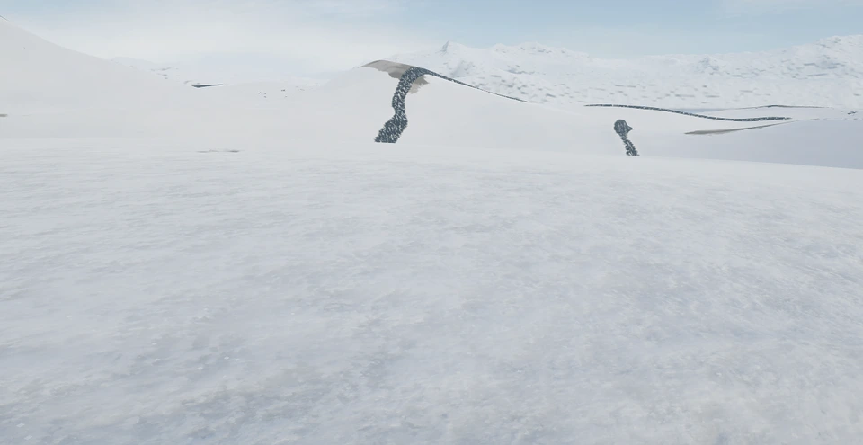
B
B · 同地点老化后的风压雪 同一构建、同一日光机位，分别将材质设为新雪与陈雪。看前景，新雪的明度更均匀，陈雪露出了更暗的压实条带。
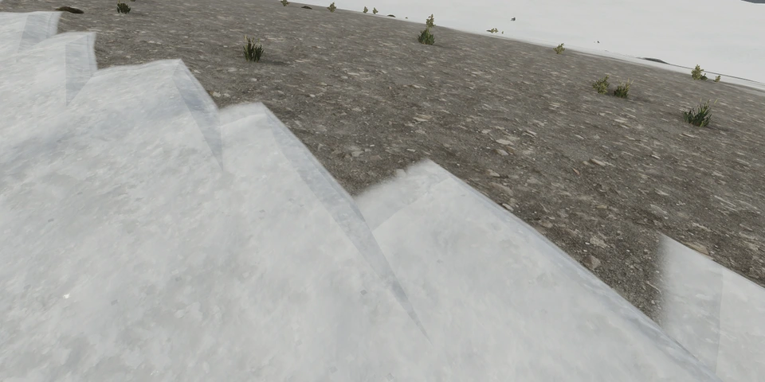
A
A · 坡顶积雪沿三角形呈阶梯状下降 沿脊线斜看，原先每个地形三角形都可能形成一级台阶，站立视角也能看见。相同机位的后图里，积雪沿碎石边缘逐渐变薄。
B
B · 连续变薄并过渡到碎石的雪层 沿脊线斜看，原先每个地形三角形都可能形成一级台阶，站立视角也能看见。相同机位的后图里，积雪沿碎石边缘逐渐变薄。 皮肤次表面散射与分区平滑度 18 套面部材质使用 HDRP Lit 的 Skin 扩散剖面。Burley 屏幕空间滤波扩散漫反射光，红光传播距离长于蓝光。镜面高光由独立的分区平滑度控制。其余三套外观使用原身体贴图。
面部 UV 遮罩对皮肤、毛发、眼部赋予 1、0.35、0 的散射权重。皮肤、嘴唇、毛发、眼部的平滑度分别为 0.40、0.48、0.22、0.88。对原贴图亮度做 5 像素高通生成细节法线，保留平坦的眼部与口腔区域。九套胡须外观另处理发根下方的明暗。
八名队员都在 1.7 米和 0.7 米两个固定距离拍摄。整套面部材质改版后，0.7 米近景中有 0.9%–2.3% 的像素至少一个 8 位颜色通道相差超过 12 级。
A
A · 绿大衣队员的原版面部材质 灰发队员站在木屋外。两张图都取自晴天 14:00，镜头固定在人物前方 1.7 米。切换时可以先看鼻翼与脸颊之间的明暗过渡，再看上唇的短须。B 图里，须丝间露出的发根底色更深。
B
B · 同一机位下的新版脸颊着色与短须底色 灰发队员站在木屋外。两张图都取自晴天 14:00，镜头固定在人物前方 1.7 米。切换时可以先看鼻翼与脸颊之间的明暗过渡，再看上唇的短须。B 图里，须丝间露出的发根底色更深。
A
A · 金棕色须丝下的原版底色 日光下用同一机位从 0.7 m 外拍摄。胡须片下方的底色降至原值的 45%。看上唇下方金棕色须丝之间的缝隙，可以看到较暗的发根。这次同时更新了面部着色器与贴图。
B
B · 同一组胡须片下调暗的发根 日光下用同一机位从 0.7 m 外拍摄。胡须片下方的底色降至原值的 45%。看上唇下方金棕色须丝之间的缝隙，可以看到较暗的发根。这次同时更新了面部着色器与贴图。 薄冰的折射、受载弯曲与断裂 后台按冰塘种子生成 4–10 条从岸边延伸的主裂纹，分支夹角 30°–70°。每个 1 m 网格单元索引至多 16 段。着色器用折射率 1.31 追踪穿过 6 cm 冰层的光线，掠射角下裂纹显宽，不同深度的气泡产生视差。
受载点周围的 12–30 个 Voronoi 种子决定应力裂纹和破裂后的碎片边界。顶点阶段叠加至多四个载荷的阻尼位移 D·exp(−r)·(cos r + sin r)，r 以米计。岸边最后 1 m 淡出，下凹上限 3.2 cm。CPU 用同一函数校正足部 IK。
冰面止于水面上方 3 mm，裂纹与受力区叠加平滑度 0.97 的湿膜。碎片入水和游泳划水触发阻尼波环，高度图最多保存 16 个，冰洞遮罩限制范围，水面法线呈现短波。
20 m 深的冰塘设置 4 m 吸收距离与 0.5 m 最大折射距离。冰底向上采样环境探针，清冰下保留约一半天空光，积雪下约六分之一。
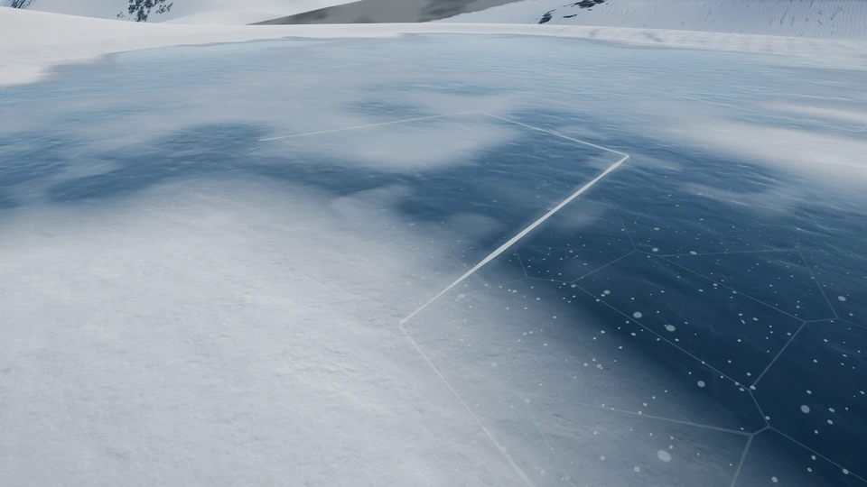
A
A · 原先完整冰面上笔直的板块边缘 同一池塘、同一无载荷机位。旧图中能看到笔直的板块边缘；新图中，重新冻结的裂纹穿过暗色冰面，小气泡在其下方，靠岸雪层逐渐过渡到清冰。
B
B · 清冰中的再冻结裂纹与气泡 同一池塘、同一无载荷机位。旧图中能看到笔直的板块边缘；新图中，重新冻结的裂纹穿过暗色冰面，小气泡在其下方，靠岸雪层逐渐过渡到清冰。
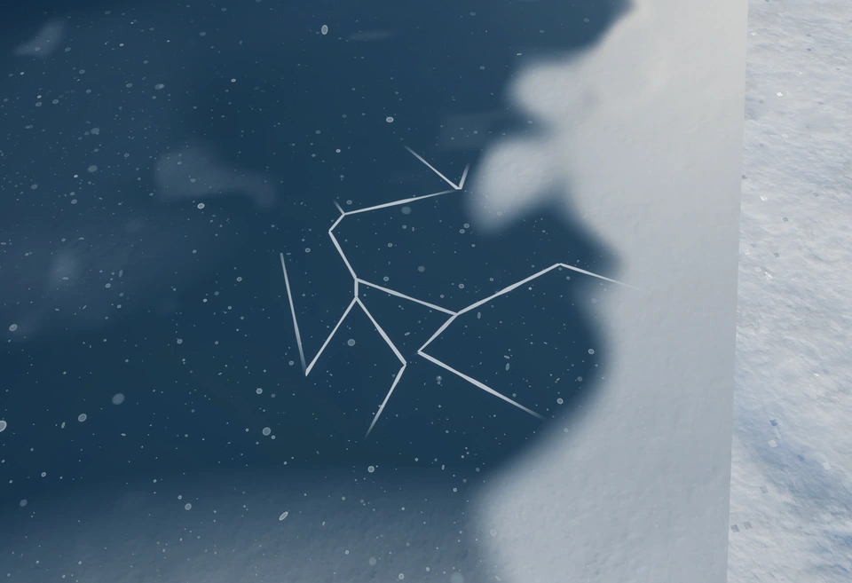
A
A · 承重时长达到 50% 时的受力裂纹 同一次承重的两个时刻。到破裂所需时间的一半时，短裂纹已在受力处交汇；到 95% 时，裂纹向外延伸，中央湿润的深色区域随之扩大。
B
B · 承重时长达到 95% 时延长的裂纹与湿斑 同一次承重的两个时刻。到破裂所需时间的一半时，短裂纹已在受力处交汇；到 95% 时，裂纹向外延伸，中央湿润的深色区域随之扩大。
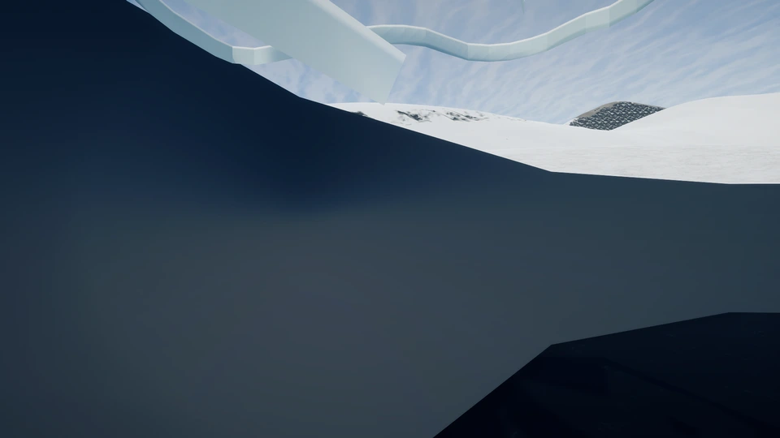
A
A · 接入水下渲染前，池塘中侧望冰层 同一池塘、同一水下机位，水平看向冰层。原画面能从下方透过冰层看到一条明亮的雪岸。为池塘启用 HDRP 水下视图并绘制受天光照亮的冰底后，深蓝色水体上方能看到浅色的冰板断面。
B
B · 水下可见的池水与受天光照亮的冰底 同一池塘、同一水下机位，水平看向冰层。原画面能从下方透过冰层看到一条明亮的雪岸。为池塘启用 HDRP 水下视图并绘制受天光照亮的冰底后，深蓝色水体上方能看到浅色的冰板断面。
A
A · 脚部 IK 按碰撞体放置靴底 种子 777，33 号冰塘，承重时长达到破冰时间的一半。切换两帧时，观察近处靴底相对冰面的位置。此时着色器绘出的冰面比碰撞体低 0.77 厘米，两张图采用相同裁切。
B
B · 脚部 IK 按着色器绘出的弯曲修正靴底 种子 777，33 号冰塘，承重时长达到破冰时间的一半。切换两帧时，观察近处靴底相对冰面的位置。此时着色器绘出的冰面比碰撞体低 0.77 厘米，两张图采用相同裁切。
A
A · 早期破口的直壁与悬空碎冰 这是冰片停稳后的同一处破口。A 中冰面到水面有 65 厘米的落差。B 中落差缩到 3 厘米，参差的洞缘、水面和浮冰在画面里接到了一起。
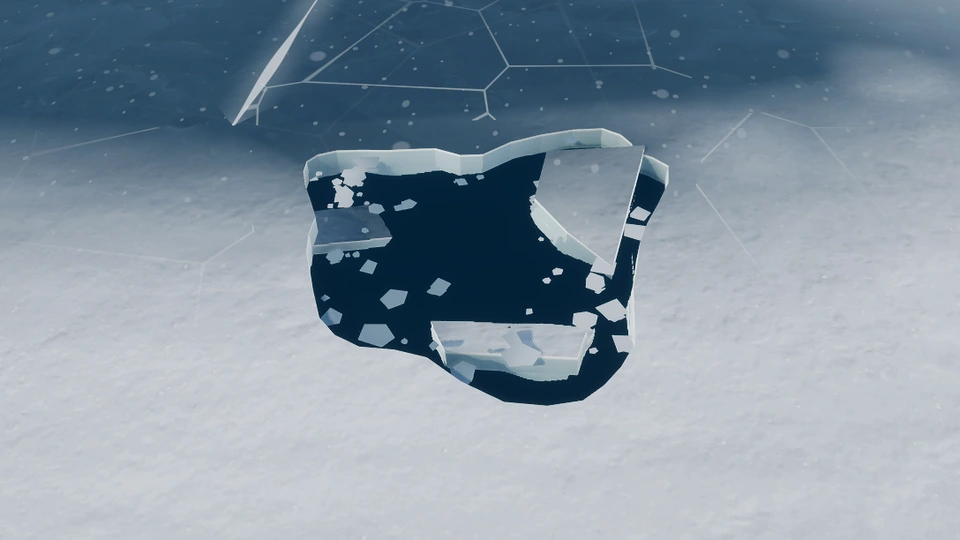
B
B · 水位贴近洞缘，碎冰浮在水面 这是冰片停稳后的同一处破口。A 中冰面到水面有 65 厘米的落差。B 中落差缩到 3 厘米，参差的洞缘、水面和浮冰在画面里接到了一起。
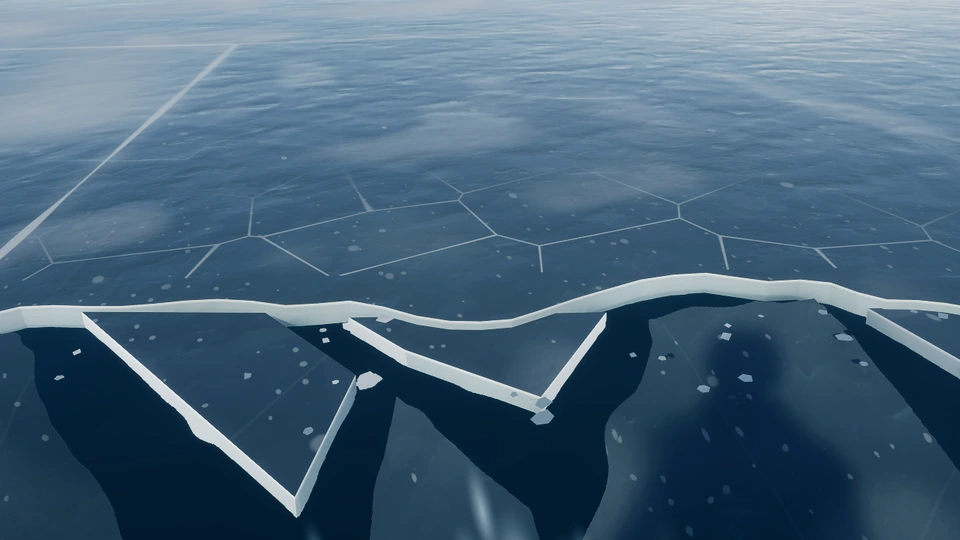
A
A · 破裂后 0.15 秒，碎冰已摆在终点 两帧都取自跑过 33 号冰塘时踩破薄冰后的第 0.15 秒。B 中的冰片还在沿洞缘转动。落水短片接着拍到了视点没入水下、再浮回水面的过程。
B
B · 同一时刻，冰片还在向水里翻落 两帧都取自跑过 33 号冰塘时踩破薄冰后的第 0.15 秒。B 中的冰片还在沿洞缘转动。落水短片接着拍到了视点没入水下、再浮回水面的过程。 查看实现片段 b.z 是这处受力的挠曲幅度。着色器累加顶点下沉量，用岸线权重衰减并将位移限制为 0.032 米，再用梯度修正法线。
float4 b=_PolarIceLoads[i];float2 d=input.positionOS.xz-b.xy;float r=length(d),e=exp(-r)*b.z,s,c;sincos(r,s,c);
drop+=e*(c+s);slope+=d*(2*e*s/max(r,1e-4)); // the surface's gradient, -grad(drop)
}
drop=min(drop*input.uv2.x,.032);slope*=input.uv2.x;input.normalOS=normalize(input.normalOS-float3(slope.x,0,slope.y)*input.normalOS.y); // cut faces keep theirs掠射角下的雪面纹理过滤 重复反照率和法线贴图在远处产生周期点阵。PolarGroundSurface 用屏幕空间导数估算投影尺寸，贴图块从 64 缩至 16 像素时，把颜色与打包法线混向 mip 12 的均值。
粉雪细法线与光泽按每周期 5–2 像素独立淡出。大尺度采样最细限制在 mip 8.5，约 20 m 内保留颗粒。固定机位测量 6–60 像素波长的周期峰值与频带中位数之比，夜景从 4.2 降到 2.9，两处日景从 5.7 降到 3.4、从 5.4 降到 3.3。
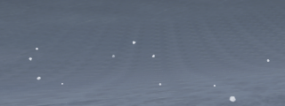
A
A · 夜间雪面上成排的暗纹 同一夜景的两张 320 × 120 像素原始局部。看亮雪点之间的地面，旧图中向远处排列的暗纹在过滤后消退，空中的亮雪点仍清晰可见。
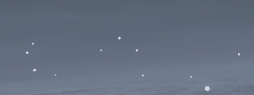
B
B · 按像素覆盖范围过滤后的雪面 同一夜景的两张 320 × 120 像素原始局部。看亮雪点之间的地面，旧图中向远处排列的暗纹在过滤后消退，空中的亮雪点仍清晰可见。 查看实现片段 较宽的一层在地面贴图块缩小时混向 mip 12 的均值。近处则按原有屏幕梯度采样。
float fine0=saturate((.15-fw)/.09),tileB=saturate((fa*kb*64-1)/3);
float3 freshMap=SAMPLE_TEXTURE2D_GRAD(_PolarGround0BC,PolarAniso,uv0,dqx*k0,dqy*k0).rgb;
float3 fresh=lerp(freshMap,lerp(SAMPLE_TEXTURE2D_LOD(_PolarGround0BC,PolarAniso,uvB,max(8.5,log2(max(1,fw*kb*2048)))).rgb,
SAMPLE_TEXTURE2D_LOD(_PolarGround0BC,PolarAniso,uvB,12).rgb,tileB),broad);海面模板遮罩与河岸冰网格 水体排除网格在海岸架内侧写入模板缓冲，在海湾和水道留孔，避免无限海面穿过低地。种子 777 的回归点低于海平面 17 m。河湖各自按局部水位绘制有限宽度的条带。
岸冰沿河每隔 2.5–8 m 斜切，每 1.5 m 采样岸线。冰厚 6–16 cm，露水面 3–7 cm，陆侧嵌岸，岸侧积雪向水侧霜冰过渡。各河段后台构建。种子 777 的河湖岸侧接缝距岸或水面在 2 cm 内，日志另记一处急转壁角与一处浮冰重叠。
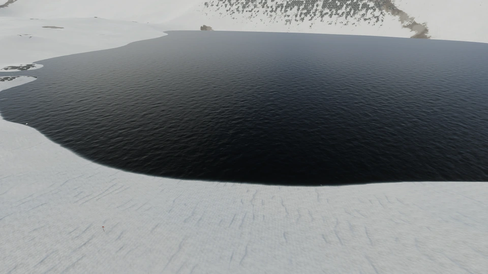
A
A · 无限海面穿进内陆洼地 种子 777，相机位于洼地边缘上方 60 m。洼底低于海平面 17 m，原先被无限海面覆盖。将内陆排除遮罩写入水体模板缓冲后，同一机位能看到完整的覆雪洼底。
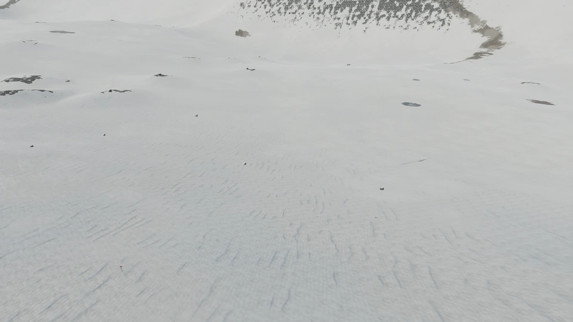
B
B · 写入水体排除遮罩后的覆雪洼地 种子 777，相机位于洼地边缘上方 60 m。洼底低于海平面 17 m，原先被无限海面覆盖。将内陆排除遮罩写入水体模板缓冲后，同一机位能看到完整的覆雪洼底。
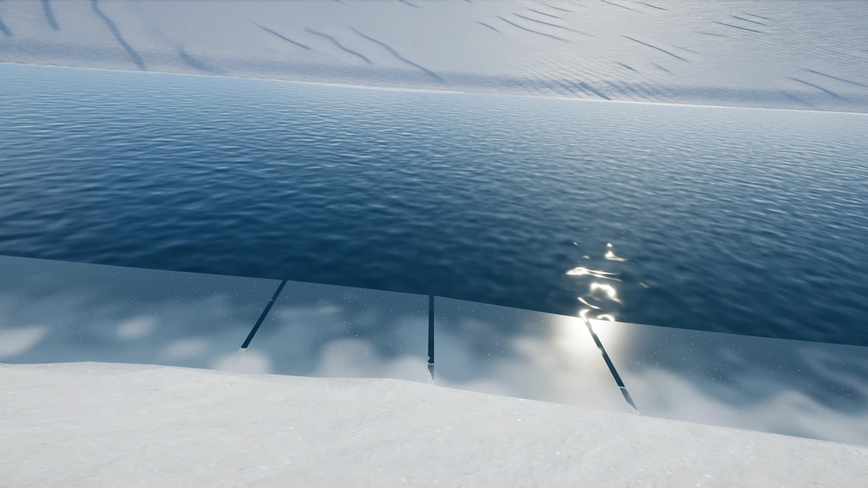
A
A · 旧河岸冰带的规则直缝 0.6.110-test 岸冰研究的同一处河弯。近岸旧图的直缝把冰分成矩形，新图中板面覆雪，水边错落，右侧还可见一小块离岸浮冰。
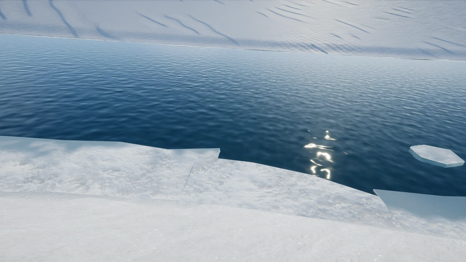
B
B · 河弯有厚度的覆雪冰板 0.6.110-test 岸冰研究的同一处河弯。近岸旧图的直缝把冰分成矩形，新图中板面覆雪，水边错落，右侧还可见一小块离岸浮冰。 直射光、天空光与级联阴影校准 14:00 固定机位关闭色调映射与调色。体积云密度取 0.45、0.30、0.20、0.12 时，日照雪面上直射光的贡献依次为 22%、30%、37%、45%。晴天采用 0.12 并提高 0.8 EV 曝光，黎明与黄昏按白昼权重插值。
开阔雪地平均线性亮度 0.532 → 0.529，日照与阴影的落差从约 1/3 档增至近 1 档。方向光阴影通过 HDRP Volume 设置四级 2048 px 级联，终点为 25、75、150、500 m，末端 15% 渐隐。
A
A · 屋侧较浅的灰色日影 对照木屋左侧的投影和屋前受光的白雪。两张图来自 0.6.54-test 晴天云密度与曝光校准，同一机位、同一时刻。
B
B · 日照雪地旁更深的蓝色投影 对照木屋左侧的投影和屋前受光的白雪。两张图来自 0.6.54-test 晴天云密度与曝光校准，同一机位、同一时刻。 卷云合成、背风扬雪与体积雾 卷云在天空与不透明物体绘制后、雾与体积云之前合成，仅覆盖地平线以上的远平面像素。D3D11 先复制相机颜色。独立通道使卷云不进入环境与反射探针，避免早期实现给雪地额外带来 26%–93% 天空光。
2048 × 1024 云图使用无压缩格式与最高细节 mip 以消除块纹和经度接缝。仰角低于约 14° 时透明度渐减，夜间及中雪以上关闭。14:00 雪地平均线性亮度从 0.5700 变为 0.5704、0.5698。1440p 下额外颜色缓冲约 29 MB。
小屋和帐篷分别提供 24 m、9 m 背风区，可削减地面吹雪 95% 的不透明度和 80% 的飘移距离。阵风强度超过 0.45 时，60 m 内最近的屋脊每秒最多发射 220 个雪粒。
重雪用 32³ 周期噪声调制局部体积雾。均值 0.5 的噪声乘二保留平均密度，雪带以 3–13 m/s 顺风移动。晴朗水面的霜雾使用独立浅层体积，以 0.3 m/s 上升。
室内反射探针、曝光与炉火阴影 当前小屋使用 6.2 × 4.4 × 8.6 m 盒投影反射探针，边界混合宽 10 cm。SSR 未命中时，金属从房间的立方体贴图取样。SSGI 的漫反射回退仍用天空，避免暗室探针把日光照明再压低约四倍。
相机完全适应室内曝光后，探针每帧绘制立方体的一面。进屋、开关门、点灭炉火、过一游戏小时或曝光移动 0.25 档时刷新。近处木架、床柱、桌腿与断木合并为只投影的网格，每个炉灯阴影面一次绘制。固定夜景中家具出现投影，房间均值变化在 4% 内。
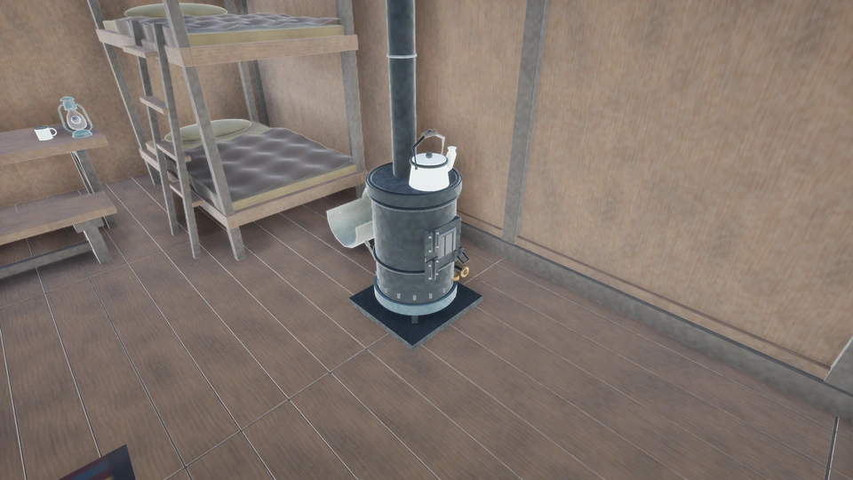
A
A · 加入局部探针前，熄灭的铁炉映出天空 相同白天机位，炉火始终熄灭。留意炉身由银灰变为深色铁器，旁边木板的冷色泛光也退去。这一机位整帧的平均亮度从 0.465 降到 0.257（量程 0 至 1）。
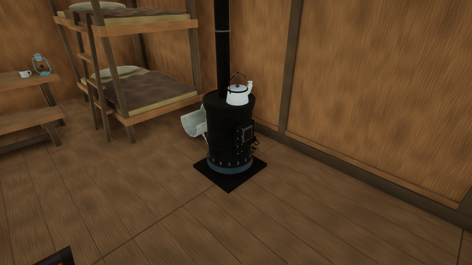
B
B · 使用室内探针后，炉身恢复深色金属质感 相同白天机位，炉火始终熄灭。留意炉身由银灰变为深色铁器，旁边木板的冷色泛光也退去。这一机位整帧的平均亮度从 0.465 降到 0.257（量程 0 至 1）。 原生 TAA 与四种上采样路径 默认采用原生分辨率 TAA，重投影历史采样以稳定移动中的旗布和亚像素细边，中档锐化 0.5。原生 High SMAA 在当前帧识别与混合边缘，静帧轮廓锐利，运动时更易闪烁，单独锐化关闭。
TAA Upscale 使用 HDRP 时序上采样。FSR 1 在相机 TAA 后做空间上采样和 RCAS 锐化。DLSS 与 FSR 2 各用自己的时序重建。质量、平衡、性能档的内部宽高分别为输出的 67%、58%、50%。67% 对应约 45% 原生像素量。旧设置指定不可用模块时回退至原生 TAA。
0.6.123-test，RTX 4070 Laptop，前台 1600 × 900，关闭垂直同步及限帧。切换后预热 30 帧、测量 60 帧。原生 TAA / SMAA 的整帧 GPU 均值为 7.72 / 7.74 ms，67% 的四种方案为 5.69–6.16 ms。
A
A · 原生 TAA 下风雪中的固定旗杆 同一 Editor 构建、同一机位与裁切。可以比较旗杆与天空相交的边缘，以及后方的雪脊。两次截取之间旗布和雪粒仍在运动，形状会变化。要判断行走中的闪烁，需要看连续帧。
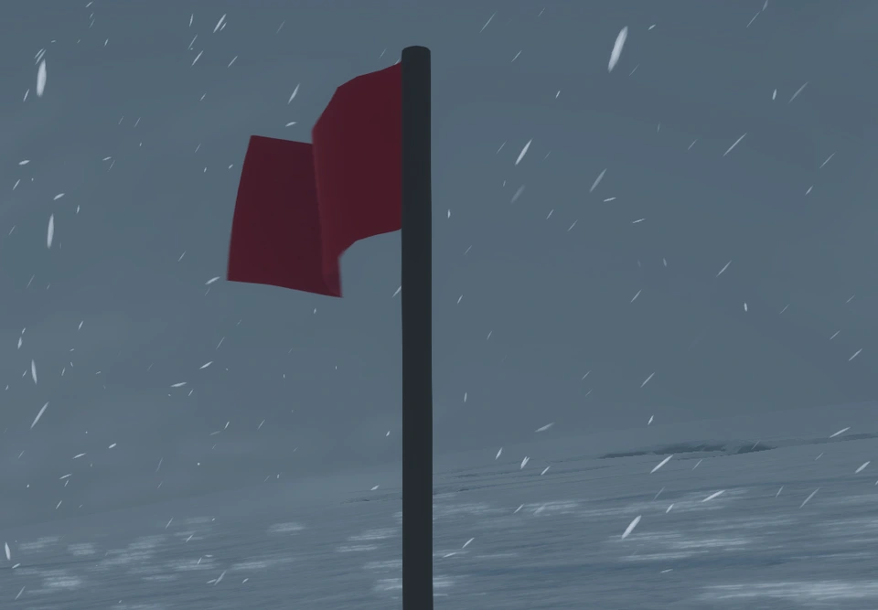
B
B · 同一旗杆，使用原生高质量 SMAA 同一 Editor 构建、同一机位与裁切。可以比较旗杆与天空相交的边缘，以及后方的雪脊。两次截取之间旗布和雪粒仍在运动，形状会变化。要判断行走中的闪烁，需要看连续帧。
A
A · FSR 1 · 67% 内部分辨率，空间放大与锐化 固定机位并裁切旗杆底部与压实雪脊。两种方案的输入宽高都是输出的 67%。FSR 1 在相机 TAA 后做空间放大和锐化，FSR 2 使用历史帧与运动矢量重建。截取时刻不同，飘雪的位置略有变化。
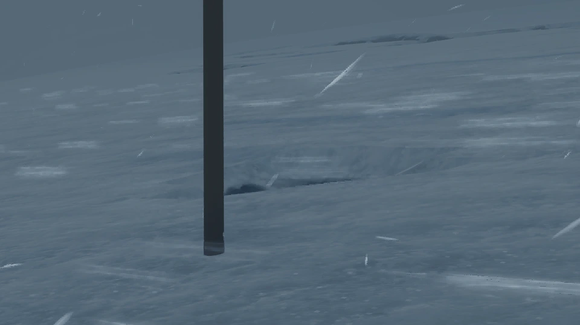
B
B · FSR 2 · 67% 内部分辨率，时序重建 固定机位并裁切旗杆底部与压实雪脊。两种方案的输入宽高都是输出的 67%。FSR 1 在相机 TAA 后做空间放大和锐化，FSR 2 使用历史帧与运动矢量重建。截取时刻不同，飘雪的位置略有变化。 同一远征视角的平均整帧 GPU 时间，输出分辨率 1600 × 900 模式 内部宽高比例 平均 GPU 帧时 TAA 100% · 原生 7.72 毫秒 SMAA 高质量 100% · 原生 7.74 毫秒 TAA Upscale 67% · 质量 5.70 毫秒 FSR 1 67% · 质量 5.69 毫秒 DLSS 67% · 质量 5.91 毫秒 FSR 2 67% · 质量 6.16 毫秒
分层 WFC 与区域边界约束 早期岛屿原型先规划海岸和水系，再用波函数坍缩（WFC）从 128 个候选地块中选取组合。求解器按最低加权熵选格，向邻格传播边缘约束。候选耗尽时回溯。旋转与镜像复用同一地形模板。
v9 先确定区域间必须连通的边界，再为 21 个分区从 256 个候选中选配地形。区内 WFC 以六种结构状态和四种朝向生成山脊、鞍部与高程，边界平滑衔接。20 个种子两两旋转配准后，宏观地块差异中位数仍为 82.5%。
分块流式加载与连续 LOD 过渡 近景稳定后保留 5 × 5 个可见块和 3 × 3 个碰撞块。后台构建网格，主线程上传或释放。0.6.157-test 的远景在 3、8、14 km 内分别取 256、128、64 分辨率，之外为 32。切换阈值带 10% 滞回。载入时仍在 6 km 内先建 128 分辨率。
升降精度都在较细拓扑上进行 0.35 s 插值，固定水平位置，将高度与法线变形到粗网格的实际三角形平面。裂隙、坑壁、塘岸与近景碰撞固定。颜色、深度和阴影通道共用位移，避免边界裂缝。
种子 777 的固定机位向内陆观察，可见地形从 930 万降至 590 万个三角形。27 组定格对照中，差异超过 8/255 色阶的像素占比最高为 0.31%，同设置重拍的最高值为 0.16%。
A
A · 加入插值前，山脊已经切到最终精细形状 这组同机位画面来自早期渲染管线的 0.5.1-streaming 诊断构建。前景山脊下方的小坡面最容易对照。记录过渡中点时，旧版已经切到精细网格，新版此时正插值到一半。
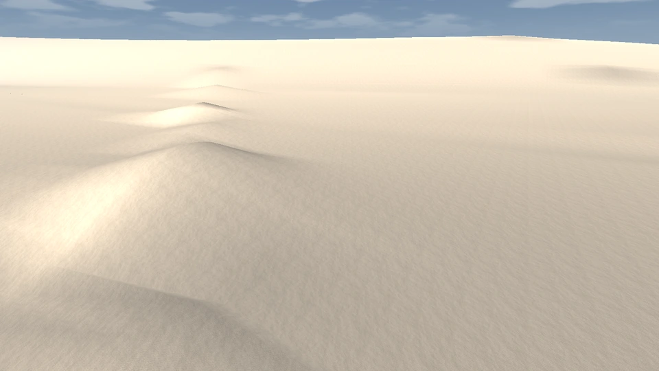
B
B · 加入插值后，细网格处在过渡过程的中点 这组同机位画面来自早期渲染管线的 0.5.1-streaming 诊断构建。前景山脊下方的小坡面最容易对照。记录过渡中点时，旧版已经切到精细网格，新版此时正插值到一半。 查看实现片段 降级与升级的阈值分别取 1.1 倍与 0.9 倍。玩家在边界附近折返时，同一块地形不会因来回跨线反复重建。
while (current > 32 && distance > Threshold(current) * 1.1f) current /= 2;
while (current < 256 && distance < Threshold(current * 2) * .9f) current *= 2;
return current;确定性并行生成与分阶段计时 v15 按候选编号将 256 份生成任务分发给工作线程，结果按原编号归位。失败重试选最小编号，与串行路径一致。区域导航网格与通廊并行构建，共享只读数据提前生成，每个线程缓存最近解码的八个高度块。
种子 777 串行、并行与读档均生成网格摘要 D291B70698FF4523。20 个预登记种子的世界哈希均与基准一致。i7-13700H 发布版首阶段由 127.4 s 降至 15.8 s。独立远景对照的工作线程累计耗时为 846 s，串行为 164 s，实际墙钟加速约 2.6 倍。
同一台机器、种子 777、发布版 Player。表中为 0.6.14-test 与 0.6.15-test（lt-03）各阶段经过的秒数。 阶段 改动前（秒） 改动后（秒） 候选生成 127.4 15.8 第二阶段生成 177.5 26.3 远景网格 268.4 63.6 近景及最终窗口 22.2 1.7
大语言模型决策与引擎执行 探险者通过大语言模型决定目的地、搜寻物资、交谈、合作和应对危险。INpcModelClient 将同一套决策系统接到 Ark 上的 DeepSeek 或 Claude；运行时存在 Ark 密钥就选择 Ark，最近一次已记录的联网验证使用 DeepSeek。每次请求携带该角色自己的观察、知识、性格与当下可执行的动作。
回复包含行动目标、对白、1–4 条命令和简短的对话记忆。JSON Schema 约束输出结构，PolarNpcMind 检查命令与引用，PolarActions 在实际执行时再次检查现场状态。移动、饥饿、体温、物品所有权和交易同意由引擎执行。较新的决定已取代旧请求时，迟到的回复会被丢弃。
网络请求期间，世界继续运行。请求失败后，角色可以完成已经通过校验的计划，再等待重试；重试间隔依次为 2、4、8、16、30 秒。这样，网络中断不会阻塞模拟，也不会产生一项实际上没有收到的模型决定。
个人知识快照与消息溯源 决策输入只包含该角色的身体状态、背包、最近八个已知地点、眼前人物、最后已知位置和已勘察的物资。离开木屋后保留上次清点数量，下次查看或听到报告才获得新信息。
每条见闻记录对象、原始来源、最近讲述者、发生与获知时间、消息渠道和转述次数。转述保留事件原始时间。附近清醒者可以旁听。玩家日记先按外貌标记未知人物，获知姓名后更新既有来源标签。
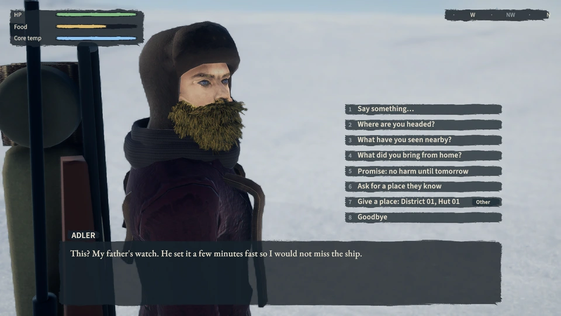
A
A · 字幕直接写出 Adler 的姓名 同一名探险者讲起父亲留下的怀表。旧版字幕直接写出他的姓氏。0.6.82-test 用外貌标识说话者，玩家可以在对话中询问姓名。
B
B · 字幕用大衣颜色和胡须描述说话者 同一名探险者讲起父亲留下的怀表。旧版字幕直接写出他的姓氏。0.6.82-test 用外貌标识说话者，玩家可以在对话中询问姓名。
A
A · 三条记录都以 Adler 为消息来源 14:01 的野外日志记录了同样的三句话，前两句来自旁听，最后一句来自当面交谈。比较每行的来源，可以看到尚未得知姓名时的署名也随识人规则更新。
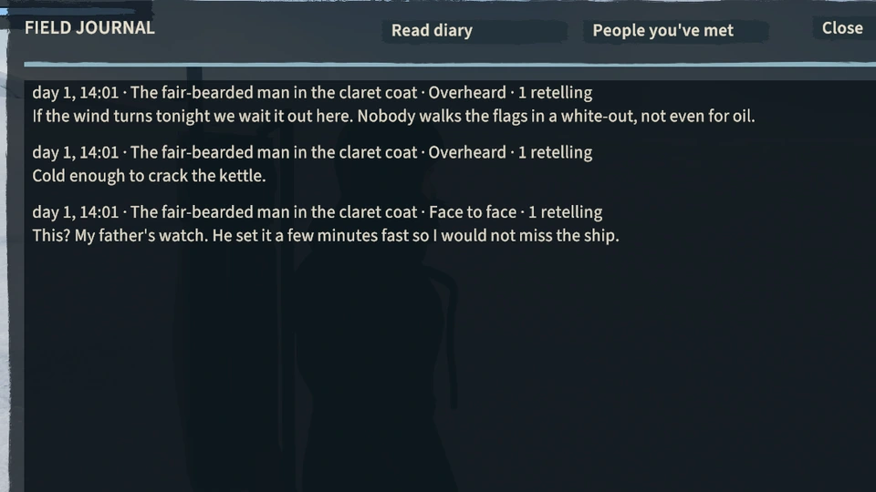
B
B · 日志以穿酒红色大衣、留浅色胡须的男子为消息来源 14:01 的野外日志记录了同样的三句话，前两句来自旁听，最后一句来自当面交谈。比较每行的来源，可以看到尚未得知姓名时的署名也随识人规则更新。 上下文裁剪、共享提示与调用成本 上下文由结构化状态组装。快照最多选取最近 16 条对话、16 条相关事件和 8 条按优先级排列的见闻；每个交谈对象另有最多 25 个英文词的摘要，保留谈话中的约定。请求独有的系统文本与输入合计限制为 16,000 个 UTF-8 字节。超过限额后，按顺序删去旧说法、低优先级见闻、较早对话和较远引用；身体状态、自有物品、可用命令与当前触发原因必须保留。
角色规则、生存手册与动作说明组成稳定的共享前缀。重复发送相同字节，使服务端能够复用提示缓存；Claude 接口还记录缓存读取与写入量。快照转换为紧凑文本，并省略空字段，减少重复 JSON 字段的开销。Ark 将输出限制为 512 tokens，并关闭 thinking；Claude 使用自己的输出和 effort 设置。
新信息、计划执行结果与 60 秒复查触发决策。重复通知合并，同一角色同时只保留一个进行中的决定，每帧最多启动一项排队决策。Ark 为玩家对话、后台规划和 NPC 交谈分配独立通道。本地账本记录输入输出用量及滚动一小时的保守费用估计，并在工作线程写盘。当前版本没有每小时消费上限；实测费用对应具体运行，缓存和请求限额也不能直接换算成固定的每玩家小时费用。
命令校验与实物交接 一次回复包含对白与 1–4 条结构化命令。动词集合根据角色能力生成，目标与物品编号按决策快照校验。执行时再次核验现场状态，处理模型回复期间物品发生转移的情况。
实物交换依次执行放下、接近、拾取。角色可感知 10 m 内最近四件落物，走到 1.5 m 内复核视线、触及范围、剩余容量与物品所有权。目击者记录拾取事件，失败原因返回下一轮决策。
A
A · 旧反馈笼统提示检查容器、靠近物品 同一个箱子关着，角色尝试从中拿取物品，两次执行都被拦下。新版校验器点明缺少的步骤。玩家在画面底部读到原因，探险者在下一次决策时收到同一条反馈。
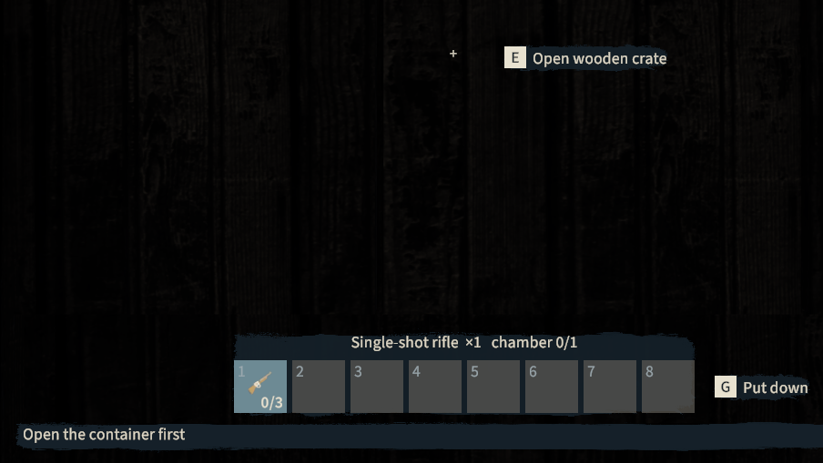
B
B · 新反馈明确提示先打开容器 同一个箱子关着，角色尝试从中拿取物品，两次执行都被拦下。新版校验器点明缺少的步骤。玩家在画面底部读到原因，探险者在下一次决策时收到同一条反馈。 0.6.30-test 加入实物交换时记录的受控检查 测试场景 观察结果 在三米外放下一罐食物 探险者看到了罐头并捡起。 拾取命令引用角色没见过的物品编号 校验器拒绝了这条命令。 另一位探险者在近处目击拾取 目击者留下了这次拾取的记录。
按角色错峰的固定步长模拟 角色编号对 20 取余，将 19 名探险者分配到间隔 0.05 个游戏秒的时相。每人每游戏秒仍推进完整一步。行走插值、风向与遮蔽使用个人时相，已有存档可由角色编号还原步点。
固定帧长、1/240–1/20 s 可变帧长与十倍睡眠均推进 1,200 游戏秒。无模型 Development 步行日的游戏自身长帧（>25 ms）从 181 降至 6，P99 从 21.12 降至 16.87 ms。第 2–6 分钟平均步进成本为每帧 0.22 / 0.24 ms，下降集中在峰值。
0.6.144-test 与 0.6.145-test 的行走日对照。游戏自身的慢帧数已分别剔除两次测试中各 52 个性能记录启动帧。 测量项目 优化前 优化后 全日游戏自身超过 25 毫秒的帧数 181 6 全日帧时间第 99 百分位 21.12 ms 16.87 ms 第 2 至 6 分钟，单帧角色步进最大耗时 23.32 ms 9.19 ms
对话通道、请求顺序与后台发送 对话与计划使用独立通道，每帧最多启动一个请求。决策在途时保留新到的紧急通知，先前回复已回答对白时仅重发警报。Ark 客户端在调用线程先占用通道，再在工作线程预留预算、构建请求体和调用 HttpClient.SendAsync。
正式回答必须先于同一前台通道的话题检查。顺序测试覆盖两者均未返回的情况。0.6.156-test 将约 32 ms 的同步发送启动移出主线程后，在线入场第三帧由 62 ms 降至 25 ms 以下。此项计时不含模型完成回复的往返延迟。
发布构建，开启真实模型，同一台测试笔记本上分次实测进入可玩状态后的三帧。 构建与轮次 第一帧（ms） 第二帧（ms） 第三帧（ms） 改动前 · fb-02 68.0 101.4 62.0 改动后 · mr-02（1） 69.0 65.5 < 25 改动后 · mr-02（2） 70.1 74.6 < 25
工程难题 积雪厚度与足迹位移 最初的雪地已经有风纹和晶光，可一低头，靴底和放下的罐头都像搁在一块刷白的平板上。颜色和法线能让雪看起来凹凸不平，鞋子和物件接触到的地方却没有厚度。我们把原有的碰撞地面当作压实的雪底，先把可见雪层抬高最多 10 厘米。站着的人仍踩在底层，鞋帮下缘自然埋进雪里。放下的物件则按当地雪深摆在表面，周围的雪脊也会压平一些，罐头不会被一道雪棱盖住。开阔地的雪后来加深到 15–45 厘米。每次落脚，计算着色器把鞋底的位置和高度写到镜头附近的纹理里，经过曲面细分的网格据此压出鞋印，再把挤到鞋边的雪堆成一圈。我们用同机位的靴底画面检查雪线，又沿一串 24 枚脚印检查连续落脚的效果。暴风雪中，最深的脚印约一个游戏分钟就会被新雪填平。
室内金属反射与漫反射回退 白天的木屋里，炉火明明熄了，炉身却泛着一层室外天空的冷光。屏幕空间反射（SSR）的射线一旦在画面里找不到命中点，就会去采样天空。我们为当前木屋放置了盒投影反射探针。早期试验让镜面反射和间接漫射光都采样这枚探针，白天的室内亮度只剩原来的约四分之一。最终，炉身的反射回退到房间探针，屏幕空间全局光照（SSGI）未命中时仍取天空光。探针等曝光适应后才开始更新，每帧重绘立方体贴图的一面，开门或点炉会触发刷新。家具补上只投射阴影的网格，地板上也就能看见炉光投下的影子。在 0.6.118-test 的同机位对照里，选定白天画面的平均亮度下降了 16%–45%，熄火炉身这一张从 0.465 降至 0.257。再在夜里点炉复测，画面平均亮度与基线的差距仍在 4% 以内。
塘岸 GBuffer 瓶颈定位 在 RTX 4070 Laptop 上以 2560 × 1440、High 画质测试时，冰塘比开阔雪原多用了 2.73 ms GPU 时间。满屏都是冰，我们起初怀疑是冰材质的开销。回到开阔雪原，只把镜头转向西边，同样的慢帧又出现了。把镜头转向八个方位并逐通道计时后，差距就有了出处。塘岸视野收入了 672 块远景地形中的 645 块，雪原路线只见 131 块，单是 GBuffer 就占了差值中的 2.08 ms。完整的深度预通道让整帧又多花了 1.04 ms。于是保留冰面的上下两层，让地形从近到远绘制，用近景先写下的深度剔除被挡住的远景像素。这一步在 0.6.154-test 的发布构建中省下约 0.3–0.5 ms，两次塘岸测试的第 95 百分位帧耗时（P95）仍为 17.03 和 17.06 ms，高于 16.67 ms 预算。此后又关闭闲置通道、按需更新天空光，并缩短远景高细节的绘制距离。到 0.6.157-test，三次塘岸复测的 P95 落在 15.10–15.80 ms。
薄冰破裂与落水表现 早期踩破冰塘时，脚下突然多出一个深 65 厘米、四壁笔直的坑，几片亮冰悬在水面上方。我们先把水面抬到冰层下 3 厘米，把洞缘做得参差。静帧好看了些，动起来仍然生硬，因为冰一破，碎片就已经摆在它们最后漂浮的位置。于是我们从靴子实际压到的点开始记录破裂。裂纹沿同一组 Voronoi 单元的边界向外延伸，眼前裂开的线也就成了碎冰真正分离的边。冰片在 0.2–0.5 秒内从破口翻进水里，落水激起涟漪，浮起的碎冰还能被游过的人推开。角色的身体和视点一起短暂沉到水面下约 35 厘米，重新露出水面才响起喘气声。在种子 777 的 33 号冰塘复拍时，我们把镜头对准破裂后 0.15 秒，看碎片是否还在翻落，再从第一人称看完整的下潜和浮出。0.6.102-test 的同塘测试中，破冰时 GPU 耗时的第 95 百分位比静水高 0.25 ms。
极地生存玩法重构 荒岛原型里，空难幸存者可以在林地寻找食物，爬上开阔高地用卫星电话呼救。9 月改成二十世纪初的极地考察队后，这两件事都得重新设计。我们想保留的是物资渐少时人与人之间的信任和猜疑，于是让队员从各自的小屋出发，把食物和炉油放进不会补货的箱子。先到的人拿走一罐，后来者就少一罐，遇上别人时，分享消息和隐瞒行程都有了实际代价。开发时保留了荒岛原型，先用独立的极地地形原型检验木屋之间的路线，再把体温、物资和炉火接入同一套生存状态。10 月 1 日，首个极地 Windows 版本 0.3.0 打通了出门、搜屋、避寒和相遇的前两幕，通过了 502 项打包版检查。无线电救援是在后续版本加入的。从第 12 天起，遇上第一个晴朗的白天，队员才有机会听到救援船的广播。消息传来之前，玩家出门是为了撑过今晚，消息传来以后，同一罐食物便成了走到海岸的路粮。